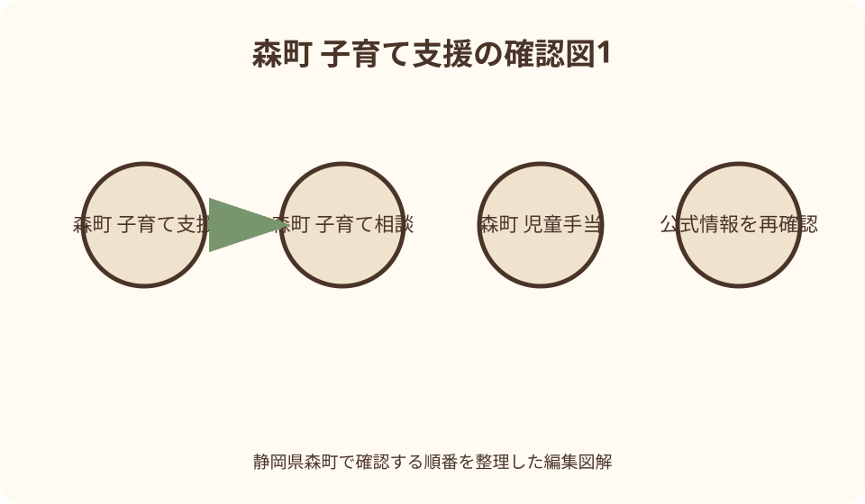
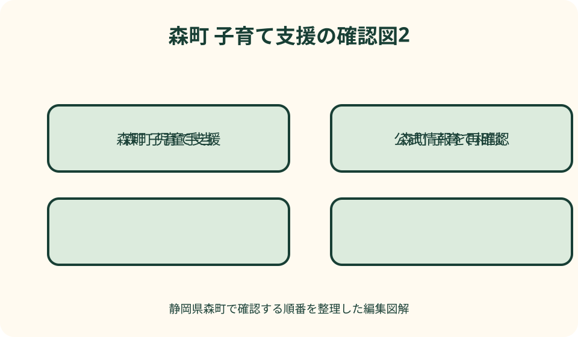

子育て・相談｜最終確認 2026-08-10
静岡県森町の子育て支援・相談窓口｜妊娠から就学まで手続と連絡先を整理
静岡県森町で子育ての相談先に迷ったら、妊産婦、子育て世帯、18歳までの子どもを対象とする森町こども家庭センター（健康こども課こども家庭係、0538-86-6330）を最初の窓口にできます。ただし、出生届、児童手当、医療費助成、園・学校の手続は担当と期限が同一ではありません。妊娠、出生、乳幼児、就園・就学の時点ごとに町公式の当年度ページを開き、所得・住所・公務員区分・申請日を個別に確認してください。命の危険は119、事件や目前の危険は110、児童虐待が疑われるときは189を優先し、平日の一般相談と待ち分けません。

編集イラスト最初の窓口を決める——森町こども家庭センターの役割
森町は二〇二四年十月、保健福祉センター内の健康こども課に、森町こども家庭センターを設置しました。妊産婦、子育て世帯、十八歳までの子どもを対象に、母子保健と児童福祉を一体で扱う総合相談窓口です。
相談内容は、思いがけない妊娠、出産への不安、子どもの発育・発達、親子関係、家庭内の困りごとまで幅があります。制度名が分からなくても、現在起きていることと子どもの年齢を伝え、適切な担当へつないでもらう入口にできます。
所在地は静岡県周智郡森町森五〇番地の一、森町保健福祉センター内です。電話は〇五三八・八六・六三三〇と掲載されています。開庁日や担当者の在席、面談予約は訪問前に確認し、緊急事態を平日の面談まで待たせません。
問い合わせる前に、保護者と子どもの氏名、生年月日、住所、妊娠週数または学年、困り始めた時期、届いた通知を一枚にまとめます。診断名や制度名を自分で決めるより、事実を短く伝える方が担当を選びやすくなります。
妊娠が分かった時——母子健康手帳と面談を一つずつ進める
医療機関で妊娠を確認したら、森町公式の母子健康手帳交付ページを開き、妊娠届、本人確認、個人番号、振込先など当年度の持ち物を確認します。交付手続は約一時間との案内があるため、窓口終了間際を避けて予約方法も尋ねます。
母子健康手帳の交付は、単に冊子を受け取る場ではなく、保健師等と今後の受診や生活を確認する機会です。体調、住まい、仕事、支援者の有無、出産場所への移動など、話したい項目をメモしておくと伝え漏れを減らせます。
森町のページは二〇二六年四月更新で、医療機関発行の妊娠届出書や妊婦本人名義の口座が分かるもの等を掲げています。ただし代理人、転入直後、外国籍、口座事情がある場合の扱いは記事から推測せず、こども家庭係へ先に確認します。
妊娠を続けるか迷う、家族へ話せない、受診費用や安全に不安がある場合も、書類がそろうまで相談を延期する必要はありません。通常相談はセンターへ連絡し、出血や強い痛みなど身体の急変は医療機関または救急へ優先して相談します。
妊婦健診と給付を分ける——受診券、里帰り、年度条件を照合
母子健康手帳と一緒に交付される妊婦健診の受診票は、決められた時期や項目に沿って使います。受診票があれば全費用が必ず不要になるとは限らないため、対象検査、追加検査、医療機関の取扱いを受診前に確認します。
里帰り出産などで森町の契約外医療機関を利用する場合、町公式は償還払いの手続を案内しています。二〇二四年四月更新ページでは出産日の属する月から一年以内という申請期限を示していますが、現在の対象費用、原本書類、期限を申請時に再確認します。
妊婦のための支援給付は二〇二五年四月に始まった制度として町が案内し、妊娠時と出産後の二回に分けた支援を掲載しています。支給額だけを切り取らず、妊娠認定、胎児数、流産・死産を含む取扱い、申請者、期限を現行ページで読みます。
給付と相談支援は関連していても、母子健康手帳の交付、健診費用、支援給付が一回の提出で全て完了するとは限りません。窓口で手続名、提出日、未提出書類、次回期限を一覧にし、控えを家庭で保管します。

出生後すぐの手続——出生届、保険、手当、医療証を別欄で確認
赤ちゃんが生まれた後は、出生届を扱う住民生活課と、児童手当やこども医療費助成を扱う健康こども課で役割が分かれます。役場へ一度行けば全制度が自動登録されると考えず、町公式の出生後手続一覧を確認します。
出生届は法律上の届出期間があるため、出生証明書、母子健康手帳、届出人、提出先を町公式で確認します。夜間・休日に届出を預けられる場合でも、関連手当の審査や不足書類の確認は開庁時間になることがあります。
児童手当は出生や転入を契機に認定請求が必要です。申請者が父母のどちらか、公務員か、加入している保険、世帯の住所、所得情報などで窓口や書類が変わるため、家庭内で申請者を推測せず担当へ確認します。
こども医療費受給者証も、出生または転入時の申請が案内されています。受給者証があっても保険外診療、入院時の食事、他制度対象分など全費用が無条件に助成されるとは限らず、対象範囲と償還手続を町公式で読みます。
乳児期の訪問・健診——通知と当年度保健ガイドを組み合わせる
出生後の訪問、乳児健診、相談の日程は、子どもの月齢と出生月で異なります。森町が公開する当年度のこども保健ガイドと個別通知を照合し、前年のカレンダーや兄姉の時の日程を使い回しません。
乳幼児健診では、母子健康手帳、健診・相談つづりのアンケート、歯科問診票など、回ごとに持ち物が示されます。記入が難しい項目は空欄を隠すのではなく、受付時に相談したい旨を伝えます。
体重増加、授乳、離乳食、睡眠、保護者自身の心身などは、病名が付いていなくても相談項目になります。一方、呼吸困難、意識の変化、けいれんなど切迫した症状は、定期健診の日まで待たず医療機関や救急へ連絡します。
指定日に仕事、きょうだいの事情、体調不良で参加できない場合は、無断で見送らずこども家庭係へ連絡します。別日、医療機関受診、個別相談などの選択肢があるかを聞き、自己判断で次年度まで延期しません。
日常の子育て相談——健康相談と支援センターを使い分ける
三歳未満の子どもの発育・発達、授乳、離乳食、保護者の悩みは、予約制のこども健康相談で相談できます。二〇二六年度の日程は町公式に掲載されていますが、対象月齢、受付、持ち物、空きは申込時に確認します。
外出が難しい家庭向けには、Zoomを使うオンラインこども健康相談も案内されています。オンラインで診察や緊急判定まで完了するとは考えず、相談内容に応じて対面、医療機関、別担当を案内されたら次の連絡先を確認します。
森町児童館内の子育て支援センターは、未就学児親子の居場所、行事、情報提供、随時の子育て相談を担います。じっくり話す場合は毎月の相談日や予約を使い、混雑時の遊び場で個人情報を詳しく話し始めない配慮も必要です。
健康相談は身体や発達を保健師等へ、支援センターは日常の育児や親子の居場所へ、と入口を分けると動きやすくなります。迷う場合はこども家庭センターへ状況を伝え、どちらが適切か聞けば制度名を探し回らずに済みます。

発達が気になる時——観察事実を持ち込み、診断を急がない
言葉、運動、食事、感覚、集団参加、生活リズムなどが気になる時は、できない項目だけでなく、いつ、どこで、どのくらい続くかを書きます。家庭と園で様子が違う場合は、双方の具体例を分けて相談します。
森町公式は、乳幼児健診・相談や育児ページで発達に関する相談機会を案内しています。健診で指摘されるまで待つ必要はありませんが、記事やチェック表だけで発達障害の有無を判定せず、専門職につなぐ入口として利用します。
相談時は母子健康手帳、健診記録、園からの連絡、動画の扱いを事前に確認します。子どもの様子を説明するための写真や動画でも、他児が映るものを無断で共有せず、持参方法を担当者へ聞きます。
支援の提案を受けたら、目的、頻度、場所、費用、送迎、園や学校との情報共有、見直し時期を確認します。一つの相談で将来が確定するわけではなく、子どもの変化と家庭の負担を記録して次回につなげます。
児童手当を申請する——十五日という目安だけで判断しない
児童手当は制度改正で対象年齢、所得の扱い、支払月、必要書類が変わるため、検索結果の古い金額表を使いません。森町公式の現行ページを開き、認定請求、額改定、消滅、住所・口座変更のどれに当たるか確認します。
森町の転入案内は、転出予定日を基準に十五日以内の請求を促しています。出生でも遡及できる範囲に限りがあるため、休日を挟む、書類が不足する、里帰り中などの場合は先に窓口へ連絡し、受付可能な方法を聞きます。
オンライン申請が用意された手続でも、添付書類の追加や窓口確認が必要になる場合があります。送信画面が完了したことと認定されたことを同一視せず、受付番号、送信日時、追加連絡、認定通知を保管します。
公務員は勤務先での申請となる場合があり、退職、採用、派遣、配偶者との所得関係で提出先が変わり得ます。町と勤務先の両方へ同じ前提を伝え、二重申請や無申請を避けます。
転入する家庭——前自治体の書類と森町の締切を接続する
森町へ転入する時は、住民異動だけでなく、児童手当、こども医療費受給者証、予防接種、乳幼児健診、保育・教育、学校の手続を並べます。前自治体で返却する証書と森町へ提出する証明を混ぜません。
児童手当の十五日目安は、実際に窓口へ来た日ではなく転出予定日等を基準に扱う案内があります。引越し荷物より前に、申請者、必要書類、オンライン可否を確認し、期限直前に旧自治体の証明不足へ気付く事態を避けます。
乳幼児の転入では、未使用の受診票や予防接種券がそのまま森町で使えるとは限りません。母子健康手帳、接種記録、健診結果を用意し、森町の券への差替えや今後の日程をこども家庭係へ確認します。
小中学生は、前の学校の在学・教科書関係書類を受け取り、森町教育委員会と転入先学校の案内に従います。学区、登校開始日、給食、通学方法、配慮事項を一度に口頭で済ませず、担当と確認日を残します。
就園・保育を考える——年度、認定、空き、費用を別々に確認
幼稚園、保育所、認定こども園の申込みは、希望施設を書けば必ず入れる手続ではありません。子どもの年齢、保育の必要性、希望開始月、就労等の証明、定員、選考、年度ごとの受付期間を町公式で確認します。
保育料や副食費等は、年齢、住民税、世帯、きょうだい、施設区分で扱いが異なります。料金表の一行だけを自宅へ当てはめず、算定年度、税情報の基準時点、減免申請、教材・延長等の別費用を担当へ尋ねます。
二〇二六年度に始まったこども誰でも通園制度は、就労要件を問わない一方、年齢、未就園、月の利用上限、施設、申請など固有条件があります。通常の保育所入所や一時保育と混同せず、当年度ページで対象を確認します。
見学では、送迎時間、駐車、昼食、アレルギー対応、昼寝、慣らし、休園、発熱時連絡を質問します。施設の雰囲気を一回の見学で断定せず、家庭の勤務時間と実際の受入時間を表にして比較します。
就学後の相談——学校、教育委員会、福祉窓口をつなぐ
就学前には、就学通知、健康診断、学区、通学、放課後の居場所、支援の引継ぎを確認します。園で受けていた配慮が学校へ自動的に全て伝わるとは限らないため、共有してよい情報と面談時期を相談します。
登校しづらさが続く子どもには、森町教育支援センター「わかば」が学習や活動、相談を行う案内があります。見学や体験、学校との協議、申請などの段階があるため、直ちに利用確定とは考えず学校教育課へ相談します。
就学応援金など年度限定の支援は、基準日、対象学年、児童手当受給者、公務員、申請要否が異なります。「申請不要」という一部区分の説明を全家庭へ広げず、二〇二六年度の自分の区分を確認します。
学習、友人関係、欠席、経済面、家庭内の問題が重なっている時は、一つの窓口で解決を求めず役割を分けます。学校への連絡内容と福祉窓口への相談内容を記録し、誰が次の連絡をするか決めます。
ひとり親家庭の相談——手当、医療、生活・就労を別に確認
離婚前後、死別、未婚、別居、DV避難など事情が異なるため、「ひとりで育てている」だけで同じ制度対象になるとは限りません。戸籍や同居、養育費、所得、公的年金などを個別に確認する必要があります。
児童扶養手当は申請が必要で、所得制限や支給要件があります。児童手当とは別制度なので、どちらかを申請すればもう一方が自動処理されるとは考えず、現況に変化があれば届出の要否を担当へ尋ねます。
ひとり親家庭等医療費助成も、対象者、所得、保険診療、受給者証、更新などの条件があります。医療費が全て無条件に不要になると表現せず、受診前後の提示方法と助成外項目を町公式で確認します。
健康こども課は、手当だけでなく生活や就労等の相談先も案内しています。離婚成立や書類完成まで待たず、住まい、安全、収入、保育、学校を優先順に伝え、県や専門機関へつなぐ必要があるか相談します。
困りごと別に連絡する——一枚の窓口地図を作る
妊娠、乳幼児の健康、家庭関係、発達、ひとり親で窓口に迷う時は、まずこども家庭センターへ連絡します。遊び場や日常の育児相談は子育て支援センター、園の入所は幼稚園保育園係、学校は学校教育課が基本です。
電話では「制度について聞きたい」ではなく、「二歳、森町へ来月転入、健診券と児童手当の期限を確認したい」のように年齢、住所、出来事、期限を伝えます。担当外なら転送先の課名と電話番号をメモします。
窓口へ行く日は、通知、本人確認、個人番号、保険情報、口座、母子健康手帳などを必要に応じて用意します。ただし個人番号や健康情報を通常メールへ送らず、町が指定する安全な提出方法を確認します。
相談記録には、日時、担当部署、聞いた内容、次に必要な書類、期限、再連絡日だけを残します。担当者名をSNSへ公開せず、家族内で共有する範囲を決め、制度改正後は古いメモより新しい公式案内を優先します。
緊急と通常相談を分ける——119・110・189を待たせない
呼吸が苦しい、意識がない、大量出血など命に関わると判断した時は一一九へ連絡します。平日のこども家庭センターや翌月の健康相談へ先に電話する順番ではなく、救急の指示に従い、住所と子どもの状態を伝えます。
暴力が起きている、連れ去りなど目前の危険がある場合は一一〇を優先します。家庭内の安全を確保できない状態で、関係者全員を同席させた一般相談を試みず、警察や緊急機関へ現在地と危険を伝えます。
児童虐待かもしれないと思った時は、児童相談所虐待対応ダイヤル一八九が二十四時間、近くの児童相談所につながると森町公式が案内しています。確証を集めるため子どもへ繰り返し質問せず、見聞きした事実を伝えます。
急迫性はないが虐待、DV、養育負担が心配な場合は、森町こども家庭センターや児童相談所の相談専用窓口へつなぎます。通常相談の受付時間外に危険が高まったら、翌開庁日まで待つ前提を外して緊急番号を選びます。
良い点——総合窓口と年齢別の接点が同じ地域にある
森町の良い点は、妊娠期から十八歳までを掲げるこども家庭センターが、保健福祉センター内で母子保健と児童福祉をつないでいることです。相談者が最初から正しい制度名を言えなくても、入口を作りやすい構成です。
同じ建物には児童館・子育て支援センターもあり、健診だけでなく親子の居場所や日常相談へ接続できます。ただし同じ所在地でも開館日、電話、対象年齢、予約の有無は別なので、連絡先を混同しない確認が要ります。
当年度のこども保健ガイド、オンライン相談、就園制度などがウェブで更新されており、訪問前に準備できます。紙の通知とウェブを照合すれば、持ち物や予約の抜けを見つけやすくなります。
一方で、ウェブ情報を読めない、書類整理が難しい、日本語以外の支援が必要などの事情もあります。分からない状態そのものをセンターへ伝え、電話、面談、通訳等の利用可能な方法を相談する価値があります。
注文したい点——制度一覧だけで完了した気にならない
注文したい点は、子育て支援を「手厚い」「無料が多い」という印象語だけで選ばないことです。給付には基準日や所得、医療助成には対象外費用、保育には選考と定員があり、家庭ごとの結論は申請審査後に決まります。
町公式サイトには更新年の異なる入口ページと新しい個別ページが共存します。検索結果の抜粋だけで期限を決めず、ページ本文の更新日、対象年度、担当課、添付様式の年度をそろえて読みます。
電話一本で複数制度を聞く時も、回答を一つの条件としてまとめません。児童手当、医療証、健診、園申込みについて、それぞれ担当、提出物、期限、結果通知を分けて復唱すると誤解を減らせます。
支援を使うことを家庭の失敗と捉え、困りごとが深刻になるまで待つ必要はありません。逆に、相談しただけで医療、保育、給付の利用が保証されるわけでもないため、次の手続と判断主体を確かめます。
対案・結論——四時点×五確認の台帳で期限を守る
結論として、家庭の台帳を妊娠、出生、乳幼児、就園・就学の四時点に分けます。各行へ制度名、担当、対象年度、必要書類、申請期限の五項目を書き、未確認欄を空白のまま見えるようにします。
妊娠欄には母子健康手帳、健診受診票、支援給付、里帰り時の償還を置きます。出生欄には出生届、保険、児童手当、医療証を置き、一つの受付印を他制度の完了印として扱いません。
乳幼児欄には健診、予防接種、発達・栄養相談、子育て支援センターを置きます。就園・就学欄には申込年度、保育認定、学校書類、教育相談を置き、年度が替わるたびに様式と期限を更新します。
緊急連絡は台帳とは別に冷蔵庫等へ掲示し、一一九、一一〇、一八九、家庭のかかりつけ連絡先を載せます。平常時に作る手続表と、今すぐ安全を守る連絡表を分けることが、迷った時の行動を短くします。
大石の視点——支援の量より、次の一手が見えること
大石の視点では、自治体の子育て情報は制度数の多さより、今日の困りごとから次の一手へ到達できるかで見ます。森町ではこども家庭センターを入口にできますが、出生届や学校まで同じ担当だと思わない整理が重要です。
家族が疲れている時、長い一覧はかえって判断を難しくします。子どもの年齢、起きた出来事、迫る期限の三つだけを書き、最初の電話で「今日確認すべきことを一つ」決める方が、実務を前へ進められます。
移住検討者も、給付額だけで森町を評価せず、転入十五日の手続、健診券の差替え、園の空き、学校への引継ぎを確認します。生活の安心は、資格があるかもしれない情報ではなく、期限内に担当へ届く動線から生まれます。
そして、子どもや保護者の安全に関わる場面では、書類の正しさより緊急連絡が先です。平時の相談を早めに使い、急変時は一一九・一一〇・一八九へ切り替える。この二段構えが森町の支援を実際の助けへ変えます。
公式情報・確認先
掲載内容は次の一次情報を基礎に整理しました。営業、料金、催し、交通は変わるため、出発前または手続き前にリンク先で最新情報を確認してください。
- 森町こども家庭センターをご利用ください（静岡県森町、2026-08-10確認）
- 母子健康手帳の交付（静岡県森町、2026-08-10確認）
- 妊婦のための支援給付（静岡県森町、2026-08-10確認）
- 妊婦健診・家庭訪問（静岡県森町、2026-08-10確認）
- 出生届（静岡県森町、2026-08-10確認）
- 赤ちゃんが生まれたら行う手続（静岡県森町、2026-08-10確認）
- 児童手当（静岡県森町、2026-08-10確認）
- こども医療費助成（静岡県森町、2026-08-10確認）
- 乳幼児の健診・相談（静岡県森町、2026-08-10確認）
- 森町児童館・子育て支援センター（静岡県森町、2026-08-10確認）
- 転入したときの子育て・学校手続（静岡県森町、2026-08-10確認）
- ひとり親家庭への支援（静岡県森町、2026-08-10確認）
- 児童虐待・DV相談（静岡県森町、2026-08-10確認）
- 教育支援センターわかば（静岡県森町、2026-08-10確認）
- こども誰でも通園制度（静岡県森町、2026-08-10確認）